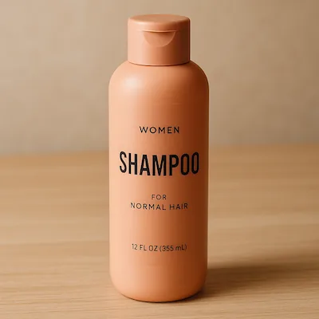

* 분석 포인트: "멋진 선원" 대신 카메라(35mm 필름), 샷(Medium shot), 조명(Direct sunlight + late-afternoon warm highlights), 의상 재질(heavy-knit wool, dark canvas), 피사계 심도(Crisp focus vs soft horizon)가 완벽히 분리되어 지정됨.
 Sunburst 렌더링 결과물
Sunburst 렌더링 결과물
 complexity="low" (단순 평면형 레이어)
complexity="low" (단순 평면형 레이어)
단순한 2~3단계의 종이 오리기 구조. 직관적이고 가벼운 아이콘이나 플랫 그래픽에 적합.
 complexity="high" (극대화된 다층 입체 레이어)
complexity="high" (극대화된 다층 입체 레이어)
수십 겹의 정교한 종이 레이어, 미세한 그림자 틈새, 원근감과 조명 반사가 극대화된 전시급 아트워크.
💡 SVG 출력의 3대 실무 가치
1. 해상도 무한 확장: 명함부터 대형 현수막까지 품질 저하 없음.
2. CSS / 코드 조작: 웹 프론트엔드에서 호버 시 색상 전환 및 애니메이션 가능.
3. 용량 초경량: 5KB 내외의 초소형 파일로 빠른 로딩 보장.
 Sunburst 네이티브 SVG 렌더링
Sunburst 네이티브 SVG 렌더링
* 주의사항: seamless loop, continuous falling snow, flickering lantern처럼 루프가 끊기지 않는 자연스러운 물리 현상을 지시해야 이음새가 튀지 않습니다.
 Sunburst 네이티브 GIF 루프
Sunburst 네이티브 GIF 루프
📌 텍스트 성공의 3원칙
1. 문구는 반드시 큰따옴표 "Exact Text"로 감쌀 것
2. 문구의 위계(헤드라인 vs 서브텍스트)와 크기를 서술할 것
3. 폰트의 패밀리(Heavy sans-serif, Elegant serif 등)를 지정할 것
 Sunburst 텍스트 렌더링
Sunburst 텍스트 렌더링
 1. 원본 이미지 (Input)
1. 원본 이미지 (Input)
식탁 위에 줄무늬 꽃병이 놓여 있는 주방 원본 사진.
 2. 마크업 오버레이 (Overlay)
2. 마크업 오버레이 (Overlay)
수정할 꽃병 위치에 붉은색 원을 간결하게 드로잉.
 3. 편집 완료 (Output)
3. 편집 완료 (Output)
테이블 질감과 배경은 100% 유지되고 꽃병만 코발트 블루 세라믹으로 완벽 교체.
 원본 (스페인어 라벨 표기)
원본 (스페인어 라벨 표기)
Caldera, Bomba de agua, Portafiltro 등 스페인어 라벨 인포그래픽.
 편집본 (영문/한국어 번역본)
편집본 (영문/한국어 번역본)
다이어그램과 화살표 위치는 고정되고 텍스트만 Boiler, Water Pump 등으로 완벽 번역 치환.
 Sunburst 인물 일관성 의상 피팅
Sunburst 인물 일관성 의상 피팅
* 쇼핑몰 사장님과 패션 디자이너에게 가장 각광받는 실무 기법. 고가의 모델 촬영을 한 번만 진행하고 수십 종의 신상 의상을 자연스럽게 가상 피팅할 수 있습니다.
 Image 1 : 인물 레퍼런스
Image 1 : 인물 레퍼런스
실내에서 촬영된 여성의 독사진 레퍼런스.
 합성본 : 여성 + 골든 리트리버 결합
합성본 : 여성 + 골든 리트리버 결합
여성의 얼굴과 헤어를 유지한 채 거실 소파에서 반려견과 교감하는 장면으로 완벽 재구성.

원본 (선반 위 샴푸 보틀)타일과 벽면 그림자가 얽혀 있는 실내 제품 촬영본.
 추출본 (완벽한 투명 알파 채널)
추출본 (완벽한 투명 알파 채널)
보틀 외곽선의 반투명 플라스틱 굴절과 텍스트 라벨을 손상 없이 보존하며 투명 배경 생성.
✏️ 프롬프트 구조화
 Sunburst 스케치 변환 실사 샷
Sunburst 스케치 변환 실사 샷
 Sunburst 모바일 UI 목업
Sunburst 모바일 UI 목업
 Sunburst IR 슬라이드 렌더링
Sunburst IR 슬라이드 렌더링
 Sunburst 4컷 만화 렌더링
Sunburst 4컷 만화 렌더링